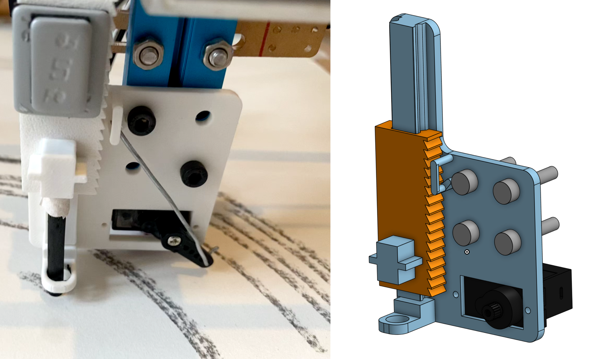

A 3D-printed attachment for drawing with charcoal sticks on a pen plotter. The core challenge: charcoal consumes as it draws, so the attachment drops the stick completely on pen-down and lifts it on pen-up, using a gear mechanism to pick it up at any remaining length.